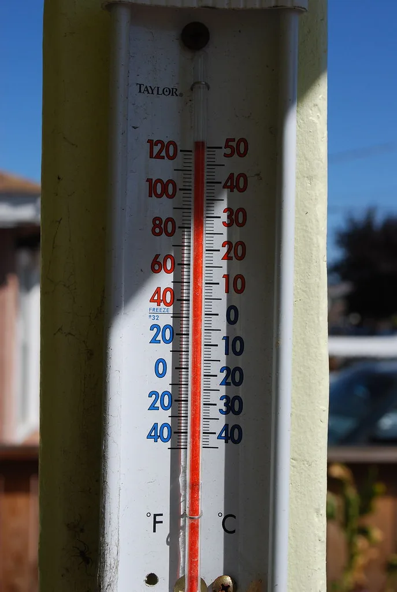

경남 양산 42.5도…122년 관측 사상 최고기온, 중대본 2단계 격상
지난 2일 오후 1시 26분 경남 양산의 기온이 42.5도까지 치솟으며 국내 근대 기상관측이 시작된 1904년 이후 122년 만에 가장 높은 기온 기록을 새로 썼다. 기상청이 기온 순위를 관리하는 전국 97개 공식 관측지점은 물론, 전국 550여 개 방재용 자동기상관측장비(AWS) 기록까지 모두 포함해도 이보다 높은 수치는 없었던 것으로 확인됐다. 종전까지 AWS 기준 최고 기록은 2018년 8월 1일 경기 광주 초월읍에서 나온 41.9도였는데, 이번에 그 기록을 0.6도 웃돈 셈이다. 양산은 하루 전인 1일에도 41.6도를 기록했으나, 불과 하루 만에 이를 크게 뛰어넘으며 5일 연속으로 지역 극값을 경신했다.
기록적인 고온의 배경에는 한반도 상공을 뒤덮은 강한 고기압과 정체된 대기 흐름이 꼽힌다. 뜨겁고 건조한 공기가 오래 머무르면서 내륙 분지 지형인 양산 일대의 기온을 끌어올렸다는 것이 기상 당국의 설명이다. 남부 지방을 중심으로 이미 여러 날째 폭염특보와 폭염중대경보가 이어지고 있었던 만큼, 이번 기록은 어느 정도 예견됐다는 평가도 나온다. 다만 실제 관측된 수치가 예상을 뛰어넘는 수준이었다는 점에서 현장의 충격은 작지 않았다.

이런 이상 고온에 인명 피해도 빠르게 늘고 있다. 경남도에 따르면 8월 1일 기준 도내 온열질환자는 174명으로 집계됐고 이 가운데 3명이 목숨을 잃었다. 전국적으로도 하루 사이 96명의 온열질환자가 추가로 발생한 것으로 파악돼, 늦게 찾아온 폭염이 오히려 지금부터가 고비라는 우려가 커지고 있다. 낮 최고기온이 40도를 넘나드는 날이 이어지면서 논밭에서 일하던 농민이나 야외 근로자, 고령층 등 취약계층의 피해가 두드러지는 양상이다.
사태의 심각성을 감안해 행정안전부는 2일 오후 1시를 기해 중앙재난안전대책본부를 2단계로 격상하고 범정부 대응 체계에 들어갔다. 경남도 역시 자체적으로 재난안전대책본부를 2단계로 올려 취약계층 보호와 현장 대응에 총력을 기울이고 있다. 정부는 가뭄까지 겹친 경남·경북 등지에 재난안전특별교부세 57억 5000만 원을 긴급 지원하기로 했고, 폭염중대경보가 다수 발령된 남부권을 중심으로는 재난구호지원사업비 1억 7000만 원을 추가로 투입하기로 했다.

양산 시내 풍경도 크게 달라졌다. 낮 시간대에는 재래시장과 도심 거리에서 사람들의 발길이 뚝 끊기고 한산해졌다는 현지 보도가 잇따랐다. 무더위쉼터로 지정된 경로당과 주민센터, 대형 상업시설 등에는 더위를 피하려는 주민들이 몰리고 있으며, 지방자치단체는 살수차를 동원한 도로 살수와 그늘막 확충 등 임시 대응책도 병행하고 있다. 다만 근본적으로는 폭염 자체가 꺾이지 않는 한 이런 임시방편만으로는 한계가 있다는 지적도 나온다.
기상 당국은 당분간 이 같은 무더위가 이어질 것으로 내다보고 있다. 고기압의 세력이 쉽게 물러나지 않는 만큼 남부 지방을 중심으로 낮 기온이 40도 안팎을 오가는 날씨가 계속될 가능성이 크다는 것이다. 정부는 논밭 작업 시간 조정, 건설 현장의 무더위 시간대 작업 중지 권고, 취약계층 대상 방문 건강관리 강화 등을 통해 추가 피해를 최소화하겠다는 방침이다. 지자체별로도 온열질환 응급실 감시체계를 가동해 실시간으로 환자 발생 추이를 살피고 있다.
전문가들은 이번 양산의 기록을 단순한 지역적 이상 현상으로만 볼 수 없다고 지적한다. 최근 몇 년 새 여름철 극값 경신이 반복되고 있는 만큼, 폭염을 일상적 재난으로 규정하고 대응 체계를 상시화할 필요가 있다는 목소리가 커지고 있다. 당장은 온열질환자 급증세를 억제하는 것이 급선무이지만, 장기적으로는 폭염 취약지역에 대한 냉방 인프라 확충과 재난 대응 매뉴얼 정비가 뒤따라야 한다는 게 중론이다.